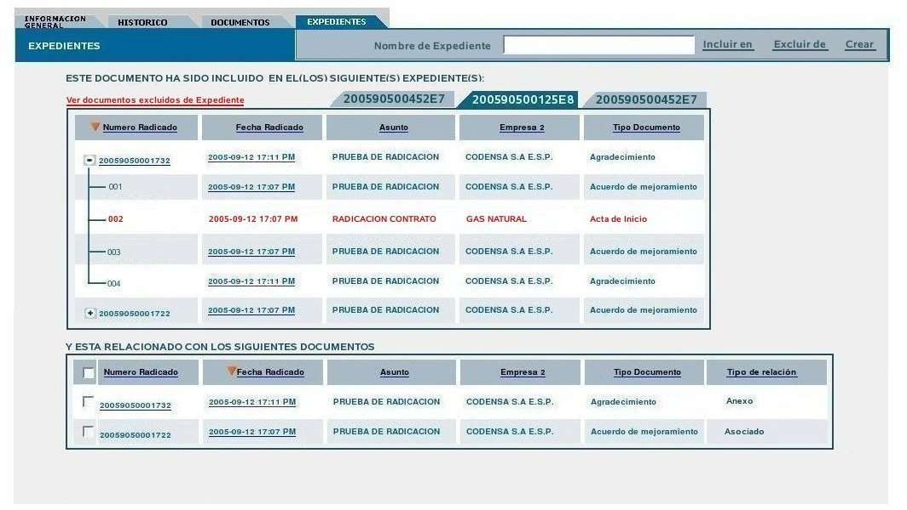

CU-ORFEO-43
Ver documentos excluídos de un Expediente.
1.
Descripción
Permite a un
usuario autorizado visualizar los documentos que en algún
momento pertenecieron a un expediente pero que por alguna causa
justificada fueron excluidos del mismo.
2. Actores
2.1
Revisor Expediente
Usuario
con permisos para la verificación del contenido y movimieto
histórico de un expediente.
3. Flujo de Eventos
3.1.
Flujo Básico ó Normal : Creación de Expediente.
3.1.1
Precondiciones
3.1.1.1. El actor debe haber ingresado al sistema.
3.1.1.2. El actor debe haber invocado la vista “EXPEDIENTES” por alguno
de los vínculos establecidos.
1.
A: INICIO -
Verifica encontrarse en la vista "EXPEDIENTES"
(pestaña) del
área de datos del radicado ó hace click en la
pestaña del
mismo nombre.

2.
S: Muestra la vista
"EXPEDIENTES" la cual
está compuesta por:
2.1. Una
caja de texto editable rotulada como "Nombre
del Expediente".
2.2. Un vínculo rotulado como "Incluir
en".
2.3. Un vínculo rotulado como "Excluir
de".
2.4. Un vínculo rotulado como "Crear".
2.5. Un mensaje con el texto "ESTE
DOCUMENTO HA SIDO INCLUIDO EN EL(LOS) SIGUIENTE(S)
EXPEDIENTE(S):".
2.6. Un vínculo rotulado como "Ver
documentos excluidos de este Expediente"
2.7. Una sección que
contiene los
datos del radicado actual en forma de columnas con información
del Número de Radicado, Fecha
de Radicado, Asunto, Empresa y Tipo de Documento. Esta
sección estará rotulada con una pestaña que
muestra el nombre del expediente creado. En caso de generarse varios
expedientes se debe mostrar tantas pestañas como cantidad de
estos se
hayan creado.
2.8. Un mensaje con el texto "Y ESTA
RELACIONADO CON LOS SIGUIENTES DOCUMENTOS:".
2.9. Una sección que muestra información de los
documentos
vinculados en forma de columnas nombradas como Número de Radicado, Fecha
de Radicado, Asunto, Empresa, Tipo de Documento y Tipo de
Relación. Esta última columna debe mostrar si el
documento vinculado es un Anexo o un Asociado. Cada registro (fila de
información de cada documento vinculado), estará
precedido por una caja de selección múltiple (checklist).
Debe existir también una caja en el encabezado de las columnas
el cual debe permitir la selección de todos los registros al
mismo tiempo al ser marcado mediante un click.
3. A: Hace click sobre la
pestaña correspondiente al expediente que desea revisar.
4. S: Presenta el
nombre del expediente seleccionado en la caja de texto rotulada como "Nombre
del Expediente".
5. A: Hace click sobre el
vínculo rotulado como "Ver
documentos excluidos de este Expediente".
6. S: El sistema muestra de
manera resaltada los documentos que han sido excluídos
permitiendo al usuario visuslizar su histórico si así es
requerido.-FIN.
